LLM Agents : Memory, Multi-Agent Systems
Large Language Models : A Hands-on Approach
Memory
RECAP
Agent primitives:
- Tool Use
- MCP
- Skills
- Context Engineering
But how do we make agents that can learn and improve over time? Agents should remembr and learn from past interactions.
Memory Systems
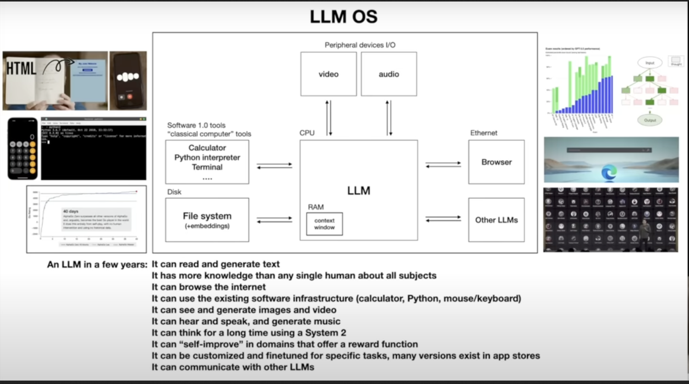
Why Agents Need Memory
Many tasks depend on information that is not naturally present in the immediate prompt
- A personal assistant remembers the user’s timezone, writing style, and recurring commitments.
- A coding agent remembers that the project uses
pytest, that auth lives insrc/auth, and that migrations must be generated manually.
- A research agent remembers sources it already checked and which ones were unreliable.
Why Agents Need Memory
Bad memory can make agents worse.
Stale memories can override current instructions.
Duplicated memories can create contradictions.
Sensitive data can be stored accidentally.
Memory writes can reinforce mistakes.
Token cost rises if memory is injected eagerly.
What should be remembered, in what form, who can edit it, when is it retrieved, and how is it evaluated?
Memory Taxonomy
| Human term | Agent analogue | Lifespan | Where it lives |
|---|---|---|---|
| Working memory | Context window | This turn | LLM input tokens |
| Short-term memory | Session state | This conversation | In-process object / DB |
| Episodic memory (events) | Past trajectories | Forever | Vector DB / SQLite |
| Semantic memory (facts) | Project knowledge | Forever | Files / vector DB |
| Procedural memory (skills) | Reusable workflows | Forever | SKILL.md files |
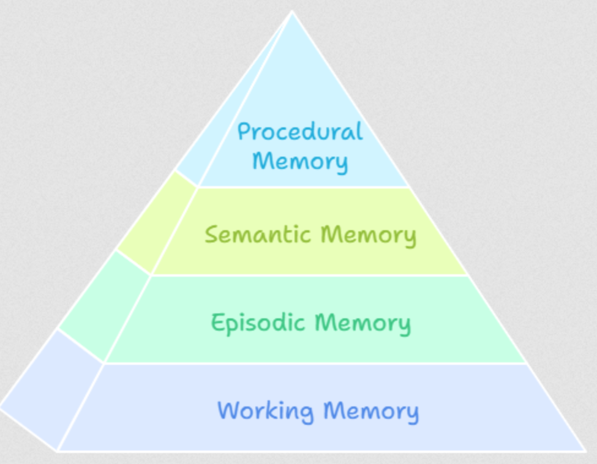
Working Memory (Context Window)
- LLM’s “RAM” - the current conversation context. Everything the model can “see” in the current request.
What Belongs in Working Memory
- Current task description
- Recent conversation turns (last 5-10)
- Active tool results
- Current file contents being edited
- Compaction summary of older history
Working Memory (Context Window)
- LLM’s “RAM” - the current conversation context. Everything the model can “see” in the current request.
What Doesn’t Belong
- Full conversation history (use compaction)
- All available tool descriptions (use JIT)
- All skill instructions (use catalogs)
- User’s entire project history (use long-term memory)
Working Memory (Context Window)
Optimization Strategies
- Minimize system prompt size : Assemble only what’s needed
- JIT tool loading : Don’t include all tools all the time
- Compact early : Don’t wait until full
- Structured messages : Dense, factual, no fluff
Short-Term / Session Memory
- Scoped : Persists within a session; cleared or archived when it ends
- Tracks : Goals, decisions, plans, and errors made during the session
- Coherence : Agent remembers what it did two steps ago
- Compaction : Used to build summaries before context fills up
- Isolation : One task or workflow per session
class SessionState:
"""Maintains state across a single conversation session."""
def __init__(self):
self.goal: str = ""
self.decisions: list[Decision] = []
self.files_modified: list[FileChange] = []
self.errors: list[Error] = []
self.plan: Optional[Plan] = None
self.compaction_summaries: list[str] = []
def to_context(self) -> str:
"""Format state for injection into context."""
return f"""
## Session State
Goal: {self.goal}
Decisions: {self.format_decisions()}
Files Modified: {self.format_files()}
Current Plan: {self.plan}
"""Long-Term Memory
- Persists across conversation sessions, gives agents a sense of history and continuity
Memory Implementations
- The OS pattern (Letta) - the agent manages memory explicitly via tool calls (
mem_load,mem_save)- the agent’s own judgment is the right gatekeeper of what goes in and out of memory
- The pipeline pattern (Mem0, Zep, Cognee) - memory is extracted, indexed, and retrieved automatically by a background service
- The agent doesn’t think about memory
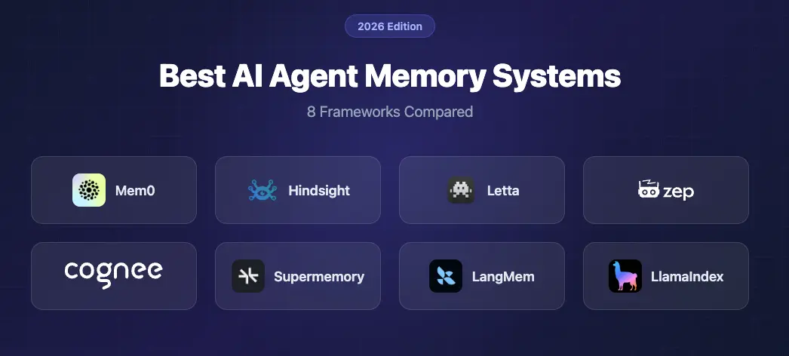
Implmentation Patterns
File-based memory (OpenClaw, Claude Code)
memory/
├── user.md # Who the user is, preferences
├── project.md # Project context, architecture
├── feedback.md # Corrections and confirmed approaches
├── reference.md # External resource pointers
└── MEMORY.md # Index file (always loaded)Why it works:
- Human-readable & editable
- Git-friendly.
- No infrastructure dependency.
- Inspectable for debugging.
Why it breaks:
- Doesn’t scale past a few hundred entries.
- No semantic search.
- Requires the agent to know which file to read.
Implmentation Patterns
Vector store memory
from chromadb import Client
db = Client()
col = db.create_collection("agent_memory")
col.add(
documents=["User prefers functional Python with type hints"],
metadatas=[{"type": "user_preference", "date": "2026-03-15"}],
ids=["mem_001"]
)
results = col.query(
query_texts=["What coding style does the user prefer?"],
n_results=5
)Why it works:
- Semantic search (finds conceptually similar memories).
- Scales to large memory stores.
- Automatic ranking by relevance.
Why it breaks:
- Embeddings ≠ understanding (false positives, especially with negations).
- Less human-readable.
- Returns top-k regardless of quality (you need a relevance threshold).
- Embedding model drift if you change models.
Hybrid (Hermes Agent, Mem0 etc)
Files for human-curated, structural knowledge (preferences, project notes).
Vector DB for retrieved, contextual knowledge (past traces, observations)
Conceptual Implmentation
class MemorySystem:
def __init__(self):
self.files = FileMemory("./memory/")
self.vectors = VectorMemory("./vectors/")
self.fts = SQLiteFTS5("./memory.db")
def store(self, m: Memory):
self.files.write(m)
self.vectors.embed_and_store(m)
self.fts.index(m)
def recall(self, query, top_k=5):
return dedupe_and_rank(
self.files.keyword_search(query)
+ self.vectors.semantic_search(query, top_k)
+ self.fts.search(query, top_k)
)Mem0 Demo
- Four-scope model (
user_id/agent_id/run_id/app_id)
# pip install mem0ai
from mem0 import MemoryClient
memory = MemoryClient(api_key="...") # or self-hosted
# Mem0 extracts facts from a conversation asynchronously.
# You write conversations; Mem0 turns them into searchable memories.
memory.add(
messages=[
{"role": "user", "content": "I'm allergic to penicillin and I work at Acme Corp."},
{"role": "assistant", "content": "Got it — noted both."}
],
user_id="asha_42",
metadata={"app_id": "support_bot", "session_id": "s-1"}
)
# Later — different session, different agent — recall semantically:
results = memory.search(
query="What medications should I avoid?",
user_id="asha_42",
filters={"app_id": "support_bot"} # scope by app
)
# Returns: [{"memory": "User is allergic to penicillin", "score": 0.91, ...}]When to Fetch Memory?
Eager injection - load relevant memory at the start of each session (Claude Code’s
CLAUDE.md, OpenClaw’sSOUL.md)On-demand tool - expose memory as a tool the agent calls (
recall_memory(query))
Episodic Memory
A structured record of what the agent tried, what worked, and what failed.
Pioneered by Hermes Agent and formalized in A-MEM (NeurIPS 2025, Xu et al.)
After completing a task, the agent writes an episode
Episodic Memory
Implementation
# 1. After completing a task, write an episodic record
episode = Episode(
task_type="deploy-to-ecs",
approach="Used CDK to define infrastructure, then deployed via CLI",
outcome="failure",
key_actions=[
"Created ECS task definition",
"Built Docker image",
"Pushed to ECR",
"Deployed with `cdk deploy`"
],
lessons="CDK deploy failed because the VPC subnet was private. "
"Next time, check subnet type before deploying. "
"Use `aws ec2 describe-subnets` to verify."
)
episodic_store.save(episode)
# 2. Before starting a SIMILAR future task, retrieve relevant episodes
similar_episodes = episodic_store.search("deploy to ECS", top_k=3)
# 3. Inject into context BEFORE execution begins
context += format_episodes(similar_episodes)
# The agent now knows: "Last time I tried to deploy to ECS, I failed
# because of private subnets. I should check subnet type first."Episodic Memory
- Learning from mistakes without retraining
- Transfer learning across similar tasks
- Continuous improvement - the agent gets better at recurring tasks
- Transparency - you can inspect why the agent chose a particular approach
Observational Memory [Mastra] - extracts discrete facts and stores them
Procedural memory: Agents write their own skills
- Hermes’ pattern: after a complex task succeeds, the agent is prompted: “Write a
SKILL.mdthat future-you could use to do this faster.”
User modeling : A special case of memory
The agent builds a deepening model of the user across sessions:
- Session 1: name, timezone, languages.
- Session 5: typical tasks, communication style, expertise.
- Session 20: decision patterns, common mistakes, preferred solutions.
Claude Code - project-level MEMORY.md store
Memory Comparison

MULTI-AGENT SYSTEMS
Why Multi-Agent?
- Specialized agents win, like specialized humans. A coder, a reviewer, a tester - clean division of labor
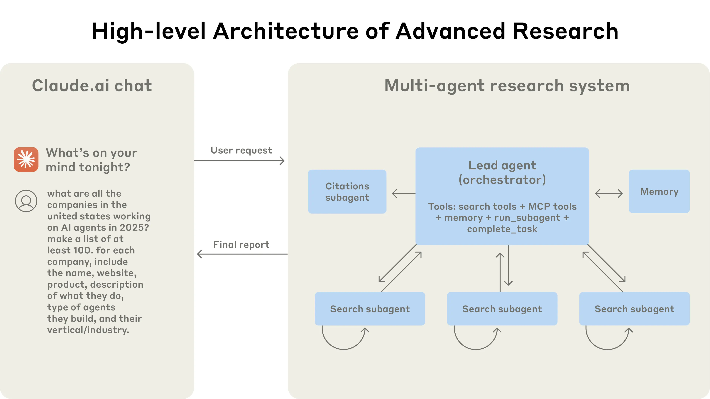
Muti-agent System Benefits
- Specialization - different prompts AND different tools/models. (Expensive model for planning, cheap model for implmentation)
- Parallelism - independent subtasks that can run concurrently. (Fix 5 unrelated bugs in 5 PRs.)
- Adversarial dynamics - debate, red-teaming, solver–critic. The disagreement is the signal.
Multi-Agent Systems Drawbacks
- Coordination cost - each handoff is a token tax + a latency tax.
- Error compounding - a 90%-reliable agent chained 5 times is 0.9^5 ≈ 59% reliable.
- Context fragmentation - agent B doesn’t have what agent A knew.
- Debug nightmare - failures cross agent boundaries; root cause analysis is hard.
Multi-Agent Frameworks
The current multi-agent framework landscape
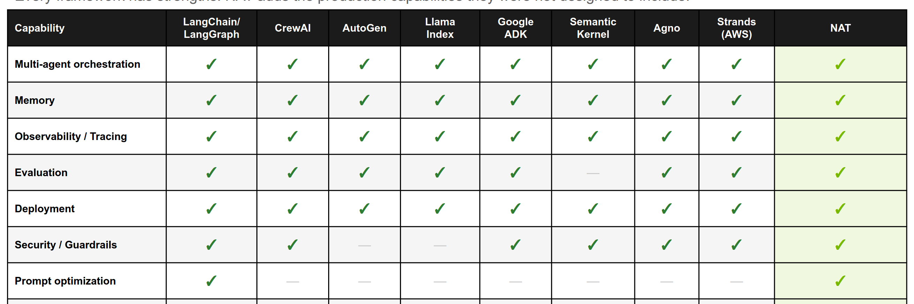
Orchestration Patterns
Pattern 1 : Supervisor / Manager (hub-and-spoke)
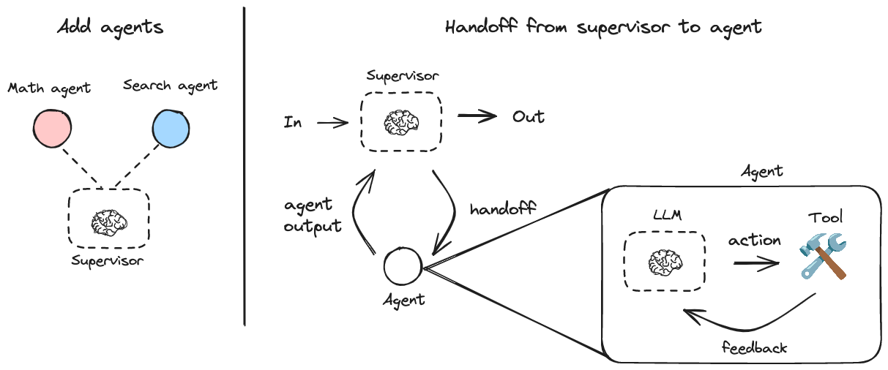
Supervisor decides who works next, aggregates results, maintains overview.
def supervisor(state):
"""LLM decides which worker to call next."""
resp = supervisor_llm.generate(
system="You manage a team: researcher, coder, tester. "
"Decide who should work next. Reply with the name "
"or 'DONE' if complete.",
user=f"Current state: {state}"
)
return {"next_agent": resp.text}
graph.add_conditional_edges("supervisor", lambda s: s["next_agent"])Used by: CrewAI (hierarchical), LangGraph, AutoGen GroupChat.
Pattern 2 : Sequential Pipeline
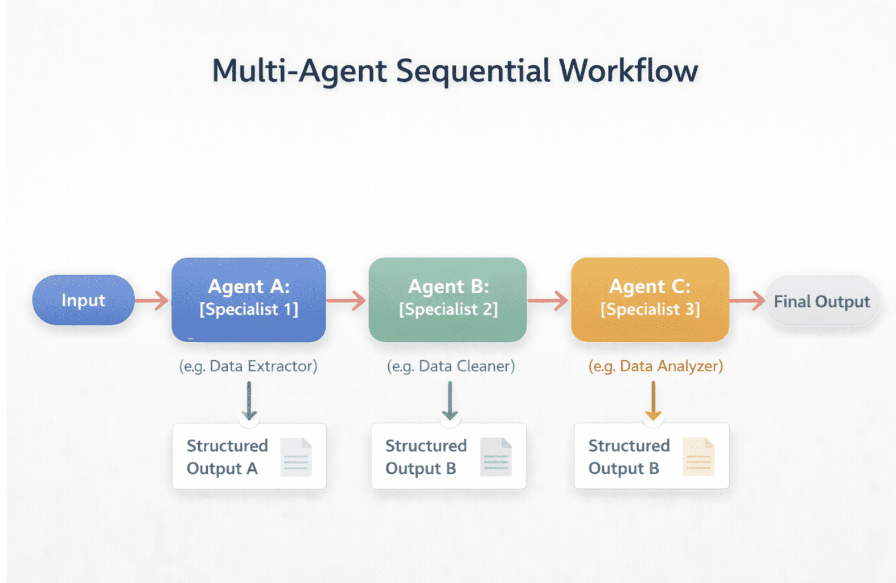
Used by:
MetaGPT (PM -> Architect -> PM -> Engineer -> QA), Aider (architect -> editor).
Pattern 3 : Graph with Conditional Edges
Explicit DAG (or graph with cycles) where nodes are agents and edges encode transitions.
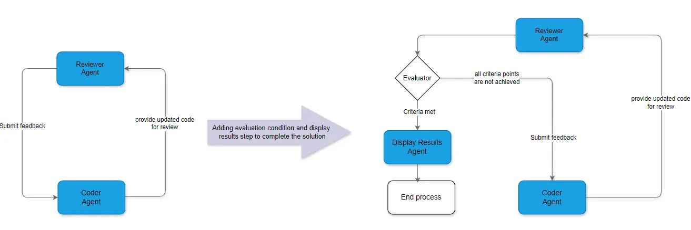
graph = StateGraph(State)
graph.add_node("planner", planner_agent)
graph.add_node("coder", coder_agent)
graph.add_node("reviewer", reviewer_agent)
graph.set_entry_point("planner")
graph.add_edge("planner", "coder")
graph.add_edge("coder", "reviewer")
graph.add_conditional_edges("reviewer", {
"approved": END,
"needs_changes": "coder"
})Pattern 4 : Parallel Fleet
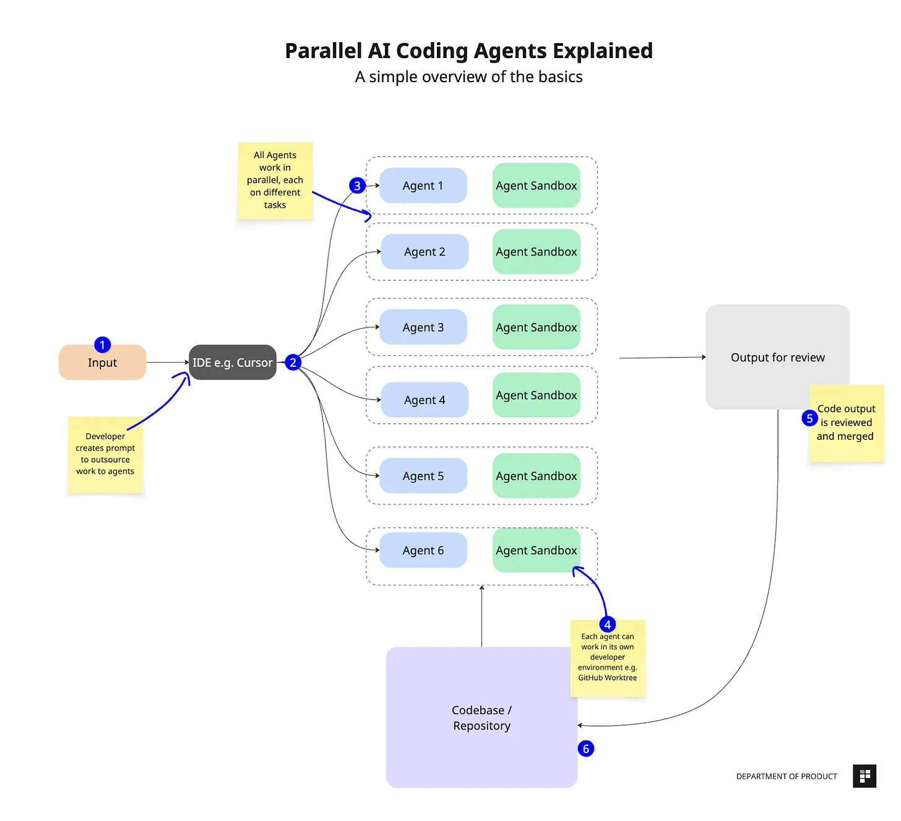
Independent agents in isolated workspaces ( eg git worktrees!) work in parallel on parallelizable subtasks
Pros: massive parallelism, isolated workspaces (no merge conflicts mid-execution).
Cons: orchestration is complex, merge conflicts etc
Multi-Agent System Checklist
- Identity prompt - who this agent is.
- Scope - what it does AND what it doesn’t.
- Tools - its specific (narrow!) tool set.
- Inputs - what shape of state it consumes.
- Outputs - what shape of artifact it produces.
- Handoff rules - when does it pass to another agent?
- Failure mode - what happens if it fails? Retry? Escalate?
Demo
- LangGraph supervisor + ReAct agents with tiered model strategy (Claude Opus 4 for supervisor, Haiku 4 for workers)
- Claude Agent SDK subagents
State Passing & Communication
- Shared state object (LangGraph, CrewAI)
- Artifact passing (MetaGPT)
- Message passing (AG2-style)
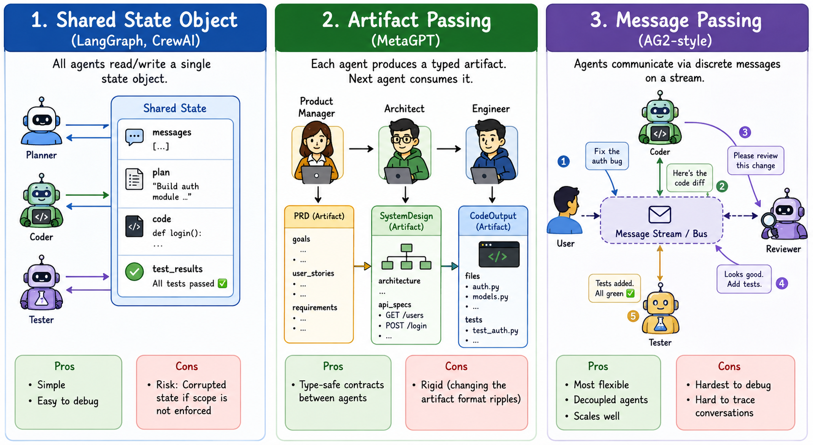
Method 1 : Shared state object (LangGraph, CrewAI)
- All agents read/write a single state object.
- Simple, debuggable.
- Risk: Corrupted state if scope is not enforced.
Method 2 : Artifact passing (MetaGPT)
class PRD(BaseModel):
goals: list[str]
user_stories: list[str]
requirements: list[str]
class SystemDesign(BaseModel):
architecture: str
api_specs: list[APISpec]
prd: PRD = product_manager.generate(requirement)
design: SystemDesign = architect.generate(prd)
code: CodeOutput = engineer.generate(design)- Each agent produces a typed artifact. Next agent consumes it. Pros: type-safe contracts between agents. Cons: rigid (changing the artifact format ripples).
Method 3 : Message passing (AG2-style)
class Agent:
async def handle_message(self, msg: Message) -> Message:
resp = await self.llm.generate(msg.content)
return Message(sender=self.name, recipient=msg.sender, content=resp)
stream.subscribe("coder", coder_agent.handle_message)
stream.subscribe("reviewer", reviewer_agent.handle_message)
stream.emit(Message(sender="user", content="Fix the auth bug"))- Agents communicate via discrete messages on a stream. Most flexible, hardest to debug
Communication Protocols
A2A (Agent-to-Agent Protocol)
- A2A developed by Google, contributed to the Linux Foundation
- It’s becoming the agent-mesh standard.
- Supported by most of agent frameworks
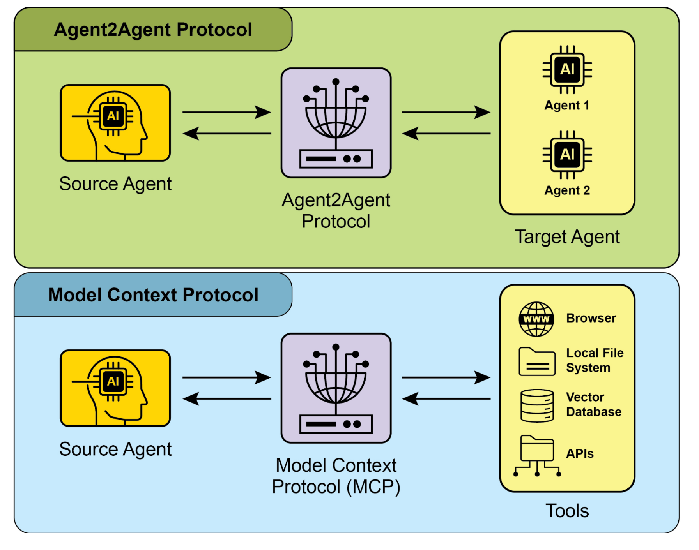
A2A (Agent-to-Agent Protocol)
A2A (Agent-to-Agent Protocol)
Architecture:
Transport: HTTP + Server-Sent Events + JSON-RPC 2.0.
Agent Cards: Eeach agent publishes what it can do, what it requires, auth scheme.
Tasks: The primary unit, long-running, with state transitions (
submitted->working->completed/failed/canceled).Modalities: Multimodal (text, audio, video streaming)
Security: parity with OpenAPI auth schemes; enterprise SSO + RBAC
A2A (Agent-to-Agent Protocol)
Minimal A2A message:
A research team’s stack might be custom for research and LangGraph for execution. A2A provides bridge between them
Why Multi-Agent systems win
Multi-agent systems usually win through context isolation, not through role specialization.
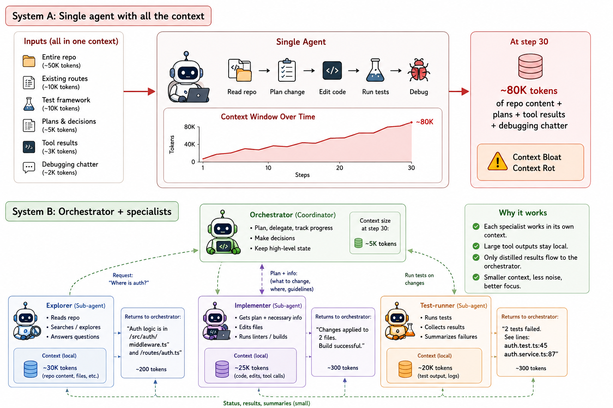
Case study: Anthropic’s multi-agent research system
How we built our multi-agent research system
Architecture:
Lead Researcher(Claude Opus 4) + parallel Sonnet 4subagents+ aCitation Agentthat runs after the research loop closes.Performance: +90.2% over single-agent Opus 4 on Anthropic’s internal research eval.
Cost: approximately 15× the tokens of a chat interaction (vs. ~4× for a single agent). Multi-agent is economically viable only for high-value tasks.
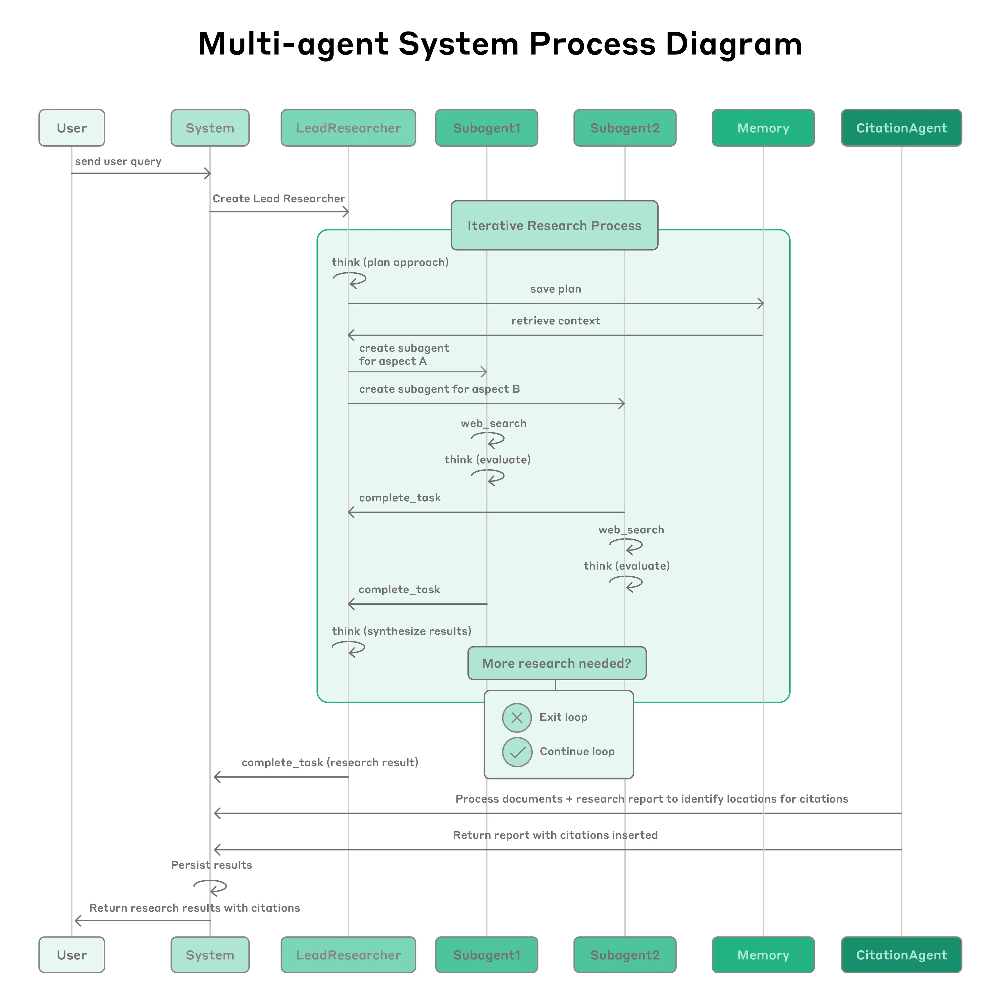
Anthropic sizing recommendations
- 3–5 agents per team max. More Agents -> coordination overhead.
- 1–5 tools per agent. More tools -> tool-selection failures.
- Max 10 tools across team. Total surface should be manageable.
- Start with 1 agent. Add more only with empirical evidence.
More Case Studies
| System | Memory | Multi-agent | Stance |
|---|---|---|---|
| Pi | Minimal (in-prompt) | None | Minimal |
| Claude Code | File-based + user model | Sub-agents (Task) | Polished baseline |
| Hermes | Episodic + observational + user model | Provider/backend isolation | Self-improving |
| OpenClaw | File-based + dated folders | Delegates to sub-agents | Heavy infra |
Appendix
Enterprise AI Agent Pattern
Standard Reference - AEGIS = Agentic AI Enterprise Guardrails for Information Security.
- Governance- agent inventory, ownership, lifecycle, decommissioning.
- Identity - every agent has its own identity, least-privilege scoped credentials; rotation policy.
- Data security - what data the agent can see, classify, write; DLP at agent egress.
- Application security - sandboxing, code-execution boundaries, MCP server allowlists.
- Threat operations - anomaly detection on tool-call patterns.
- Zero Trust - every agent action is verified; no implicit trust between agents.
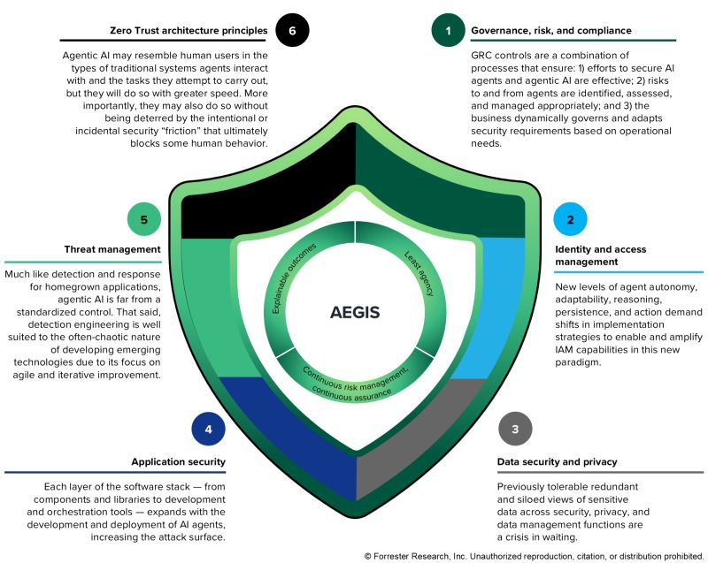
Enterprise AI Agent Pattern : 2026
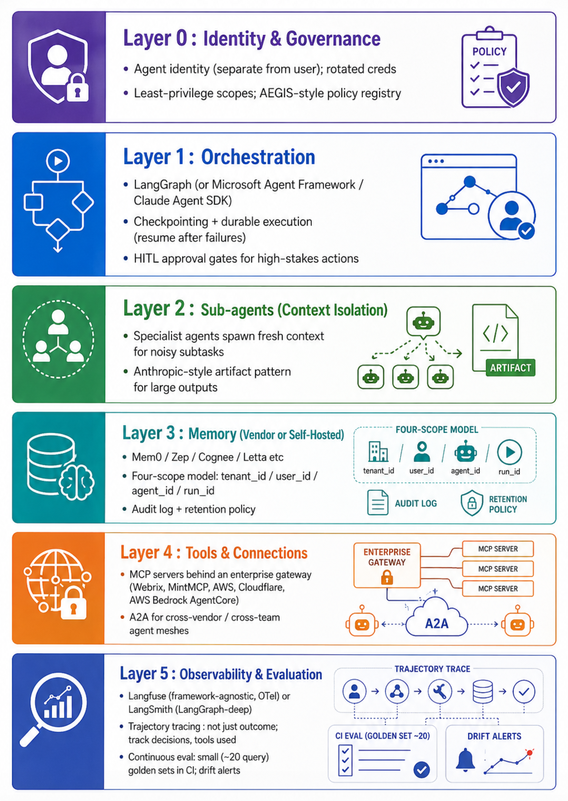
Default stack for a new custom enterprise agent
| Layer | Default pick | When to deviate |
|---|---|---|
| LLM provider | Claude (Sonnet 4 default, Opus 4 for orchestrator) OR GPT-5/o-series | Cost-sensitive → Haiku for workers; data-residency → on-prem via vLLM |
| Orchestration | LangGraph if you want graphs; Claude Agent SDK if Claude-native + want subagents primitive; Microsoft Agent Framework if Azure shop | CrewAI for quick prototypes; OpenAI Agents SDK if OpenAI-native |
| Memory | Mem0 (fastest path) | Zep if you need temporal audit; Cognee if you need graph over docs; Letta if you want explicit OS-style paging |
| Tools | MCP servers behind an enterprise gateway | Inline tools only for in-process logic |
| Inter-agent | A2A for cross-team / cross-vendor; in-process handoffs within one team | MCP-wrapping if the other agent is logically a tool |
| Observability | LangSmith (if LangGraph) OR Langfuse (if framework-agnostic) | Arize Phoenix if eval rigor is the priority |
| Sandbox | Docker containers + git worktrees per parallel agent | firejail / gVisor / E2B for stricter isolation |
| Governance | AEGIS-aligned policy registry; per-agent identity; least-privilege | If the org has a CISO, they already have requirements — use theirs |
Build Order
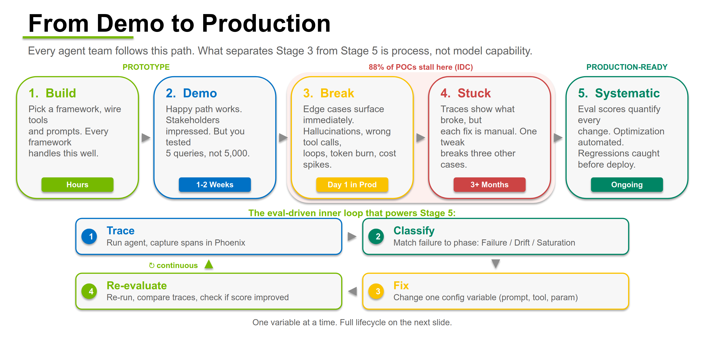
Build Order
- Eval harness - golden outputs, LLM-as-judge with calibrated rubric (Class 1/2 work).
- Single-agent prototype - one LLM, one prompt, two tools, no memory. Measure baseline cost/latency/quality.
- Trajectory logging via OpenTelemetry - Every tool call, every cost, every latency.
- Memory layer - (4-scope: tenant/user/agent/run). Re-run eval
- Compaction + structured note-taking -
PROJECT_NOTES.md-style external scratchpad for any task >10 turns. - Sub-agent for one noisy subtask - pick the highest-token sub-task (file exploration, web search, debugging) and isolate it. Re-run eval under equal budget.
- MCP gateway in front of tools - even if it’s just one tool. The gateway is the audit + RBAC point; never let agents talk to tools directly in prod.
- HITL approval gate for one high-stakes action - destructive writes, financial transactions, customer-visible outputs. Build the human-in-the-loop UI before you need it.
- Eval in CI - small (20 prompt) eval suite runs on every PR. Alert on regression. Drift detection in production.
- Failure taxonomy + runbook - after 50 production traces, categorize failures (wrong tool, infinite loop, context overflow, hallucinated API, permission denial, memory miss). One mitigation per category.
Questions to answer about an Enterprise Agent
- What does the agent actually do? - one user-visible workflow, end-to-end.
- How do we know it works? - eval numbers on a documented golden set.
- What does it cost per user per month? - token cost + memory cost + observability cost.
- What gets affected if the agent goes wrong? - sandbox, permissions, HITL gates.
- Vendor Portability? - abstractions over MCP/A2A so a memory provider swap is one config change.